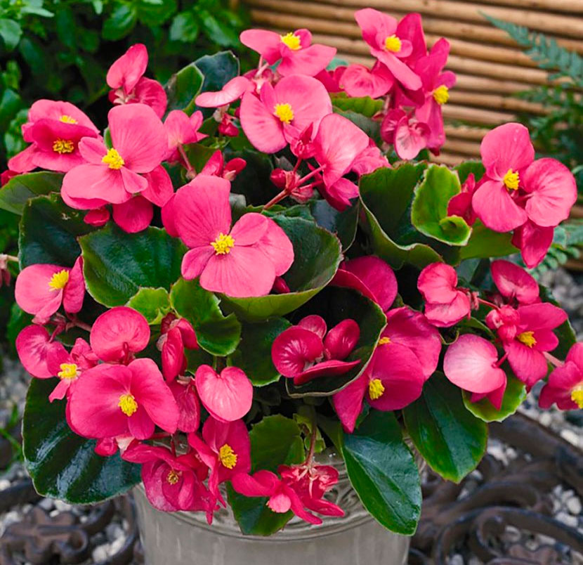

Хлорофитум хохлатый
К числу одних из самых популярных комнатных растений относят именно
компактные разновидности хлорофитума, в том числе и хохлатый. Они отличаются
нетребовательностью к уходу и неприхотливостью к условиям выращивания и при этом обладают
высокой декоративностью. А еще такое растение ценится за то, что оно эффективно очищает
воздух в комнате от различных веществ, которые могут навредить здоровью человека.В природе
насчитывается немало видов хлорофитума, однако в домашних условиях встречается всего лишь
несколько разновидностей. При этом наибольшее распространение в комнатной культуре получил
именно хлорофитум хохлатый (Chlorophytum comosum). А из-за того, что длинные листовые
входят в состав прикорневых пучков, этот вид еще называют пучковым.
В комнатных условиях это растение достигает в высоту, как правило, не более 0,3–0,4 м,
причем диаметр куста примерно такой же. Узкие листовые пластины имеют длину 0,2–07 м.
Окрас листьев зависит от разновидности и бывает полосатым либо насыщенно-зеленым.
Пеларгония
У такого растения, выращиваемого в домашних условиях, имеется одно не
совсем обычное свойство. Так, его аромат может одних людей успокаивать и расслаблять, а у
других при его вдыхании ухудшается самочувствие. В комнатных условиях растят всего
несколько видов, но при этом выбор довольно богат.
Пеларгония обладает достаточно эффектным внешним видом. Однако это еще не все. В ней
содержатся вещества, которые применяются в медицине и парфюмерии. Так, эфирное масло,
полученное из данного растения, используют при создании духов и мыла, а также оно
применяется в составе средств для очистки воздуха от болезнетворных бактерий и вредных
примесей.
Аспарагус перистый
Аспарагус перистый, который еще именуют щетинковидным, относится к декоративным сортам.
При этом данная разновидность пользуется наибольшей популярностью у цветоводов. Куст
внешне похож на густое зеленоватое облако, а все это благодаря его необычным побегам. Он
способен стать изюминкой любого интерьера. Но не только необычная красота привлекает
цветоводов, а еще нетребовательность в уходе и неприхотливость. А те, кому интересен
фэн-шуй, знают о чудесных свойствах домашнего аспарагуса. Считается, что он помогает
людям, живущим в доме, справиться со стрессом и обеспечивает им защиту от негативной
энергетики.
Каланхоэ
Растение каланхоэ (Kalanchoe) является представителем семейства
Толстянковые. Этот род объединяет больше 200 различных видов, при этом он представлен
полукустарниками, суккулентами и травянистыми многолетними растениями. В природе это
растение можно повстречать в тропических областях Азии, Австралии и Америки. Листва у
разных видов может отличаться. Как правило, листья толстые, они бывают сидячие или
обладают черешками, а еще могут быть слабо либо сильно рассеченными. Во время цветения
образуется зонтик, в состав которого входят цветки белого, фиолетового, красного либо
желтого окраса. В домашних условиях прекрасно растут почти все виды данного растения, если
конечно цветовод придерживается правил ухода за культурой.
Мирсина
Растение мирсина (Myrsina) считается представителем подсемейства
Мирсина, которое является частью семейства Первоцветных. В природных условиях такое
растение можно повстречать на территории Китая, южной части Африки и в Гималайских горах.
Данное подсемейство включает не только мирсину, но и еще примерно 46 родов, в том числе
вербейник и цикламен.Как правило, мирсину культивируют в качестве декоративно-лиственного
растения. Однако существуют разновидности, обладающие лекарственными свойствами. При этом
в комнатных условиях наиболее часто выращивают такую разновидность, как мирсина
африканская. В домашней культуре она представляет собой карликовое деревце, причем
взрослое растение выращивают в кадке. Так как это медленнорастущее растение, и оно
прекрасно переносит обрезки, его нередко культивируют в качестве бонсай.
Бегония вечноцветущая
Красивоцветущее растение бегония вечноцветущая (Begonia
semperflorens) является частью семейства Бегониевые. В природных условиях его можно
повстречать во влажных тропиках и в высокогорье Америки, Африки и Азии. Родом такой цветок
из Бразилии. Здесь в лесной зоне и на побережье океана активное развитие растения
наблюдается круглый год. В тех регионах, где климат умеренный, бегонию растят в комнатных
условиях.
Этот многолетник нуждается в систематическом проведении омолаживающих процедур. Кусты
растут довольно быстро и достигают высоты около полуметра. В течении года растение может
увеличиться в размерах вдвое. Оно порадует своими прелестными цветками уже в год посадки.
Эту разновидность недаром назвали вечноцветущей, эффектные цветки красуются на ее побегах
на протяжении всего года. Цветки могут быть махровыми либо простыми, при этом их лепестки
могут быть окрашены в самые разные оттенки и их сочетания.
